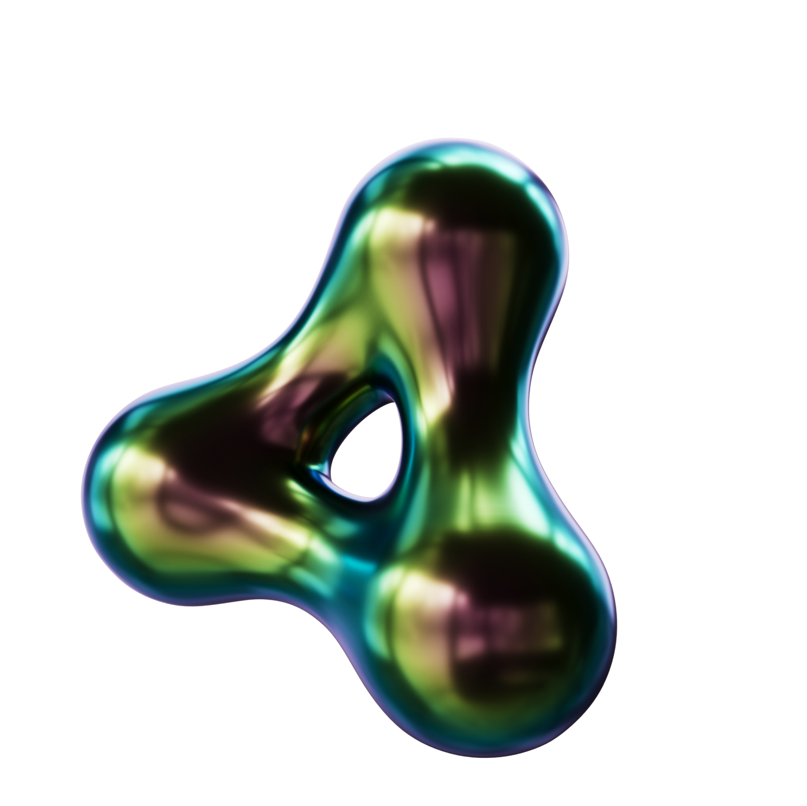
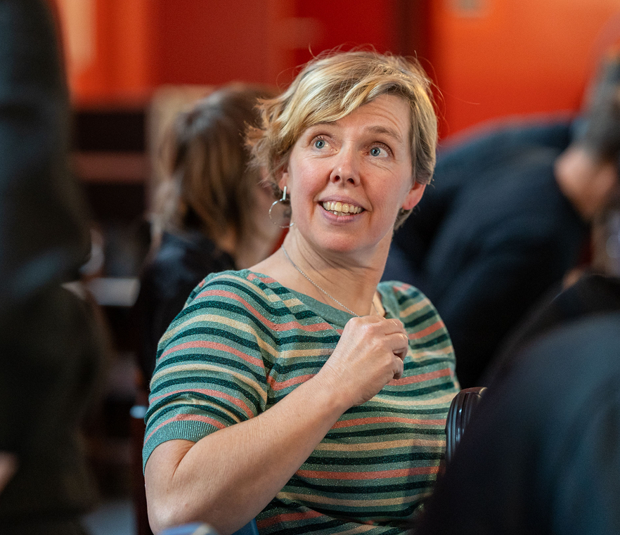
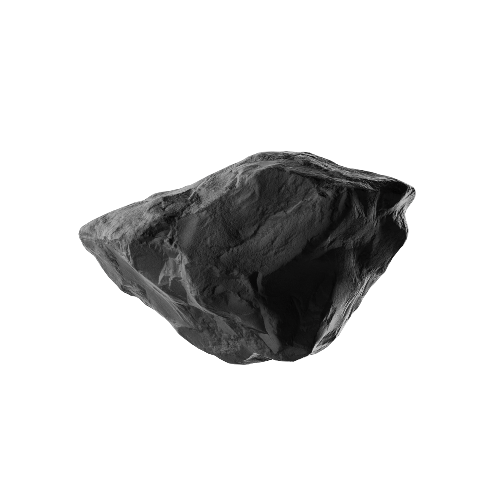

Workshop voor jonge onderzoekers
Hoe kom je op
onze radar?


Eerst even peilen
Wie wil ooit iets
met UvVL maken?

Aan jou
Welk format
kies jij?
Waarom?

Oefening
Wie ben jij?
In twee zinnen.
Redactionele blik
Waarom interesse
in jou?
Wat maakt je verhaal interessant voor anderen?

En jij?
Jonge onderzoeker.
Geen mediaster.
En dan?

Wat wij zoeken
EnthousiasmeHelderheidNieuwsgierigheidOpenheid


Twee kanten
Enthousiasme
trekt aan.
Expertise blijft hangen.
Waar vinden wij mensen?
Overal.

Wat helpt?
- 01Doe dingen.
- 02Laat je zien.
- 03Mail ons.
Wat vertel je?
Communiceer niet
je publicatie.
Vertel wat ons nieuwsgierig maakt.

Achter de schermen
Hoe ontstaat
een productie?

Van eerste telefoon tot opname
01Gesprek
02Structuur
03Repetitie
04Opname
Aandacht verdien je
Niemand is
verplicht
te luisteren.

Wie kies jij?
AWereldexpert
BFantastische verteller


Samen oefenen
De redactie-
vergadering
Speel mee.